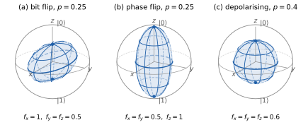
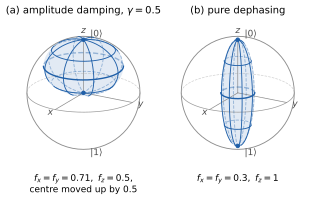
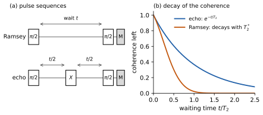
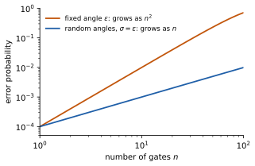

2 Noise channels and error budgets
\[ \newcommand{\ket}[1]{\left|#1\right\rangle} \newcommand{\bra}[1]{\left\langle#1\right|} \newcommand{\gate}[1]{\mathrm{#1}} \newcommand{\Tr}{\mathrm{Tr}} \]
In the previous chapter, we described in words what can go wrong in a quantum device, its noise (Section 1.5). In this chapter, we describe noise mathematically. The goal is to model how noise affects the results of a computation, and to use these models in our estimates and simulations. One model runs through the whole chapter: a noisy operation is the ideal operation followed by a quantum channel, a map that turns the state of the qubits into a noisier one.
By the end of the chapter, you should be able to write a channel with Kraus operators and work out what it does to Pauli expectation values; relate \(T_1\), \(T_2^*\) and \(T_2\) to the channels behind them; tell local from global noise, and coherent from incoherent errors; model readout errors; estimate how much signal a circuit keeps; and separate the bias caused by noise from shot noise.
2.1 Density matrices and channels
We first review the two tools that the rest of the chapter uses throughout. If you know them well, skim this section for the notation.
2.1.1 Mixed states
Noise makes the state of a device uncertain. If the qubits are in the state \(\ket{\psi_k}\) with probability \(p_k\), the expectation value of an observable \(O\) is \[ \sum_k p_k \bra{\psi_k}O\ket{\psi_k} = \Tr[O\rho], \qquad \text{with} \quad \rho = \sum_k p_k \ket{\psi_k}\bra{\psi_k} . \] The probability of each measurement outcome is the expectation value of a projector, so all predictions depend on the ensemble only through \(\rho\).
Definition 2.1 (Density matrix) A density matrix on \(n\) qubits is a \(2^n\times 2^n\) matrix \(\rho\) that is positive semidefinite (Hermitian, with no negative eigenvalues) and has trace one. The expectation value of an observable \(O\) is \(\langle O\rangle = \Tr[O\rho]\). A pure state \(\ket{\psi}\) has \(\rho = \ket{\psi}\bra{\psi}\), and then \(\langle O\rangle = \bra{\psi}O\ket{\psi}\); every other state is mixed.
A density matrix is pure exactly when \(\rho^2 = \rho\), or, equivalently, when \(\Tr[\rho^2] = 1\). The purity \(\Tr[\rho^2]\) measures how mixed a state is. The eigenvalues \(\lambda_k\) of \(\rho\) are non-negative and sum to one, and the purity is \(\sum_k\lambda_k^2\). It is 1 when one eigenvalue is 1 and the others are 0, which is a pure state. It is smallest, \(2^{-n}\), when all \(2^n\) eigenvalues are equal, which is the maximally mixed state \(I/2^n\): the qubits are in a uniformly random basis state, and we know nothing about them.
For a single qubit, we want to extend the Bloch-sphere picture of pure states (Figure 1.7) to mixed states. Every Hermitian \(2\times 2\) matrix can be written in the Pauli basis \(I, X, Y, Z\), with real coefficients. The Pauli matrices have trace zero, and the product of two different ones is the third, up to a factor (Section 1.3.1), so \(\Tr[PQ] = 2\) if \(P = Q\) and \(0\) otherwise. If we write \(\rho = \frac{1}{2}(c_I I + c_x X + c_y Y + c_z Z)\), the trace of \(P\rho\) therefore picks out one coefficient at a time: \(c_I = \Tr[\rho] = 1\) and \(c_x = \Tr[X\rho] = \langle X\rangle\), and likewise for \(y\) and \(z\). A density matrix of one qubit is therefore \[ \rho = \frac{1}{2}\left(I + r_x X + r_y Y + r_z Z\right), \qquad r_x = \langle X\rangle,\ r_y = \langle Y\rangle,\ r_z = \langle Z\rangle . \tag{2.1}\] The vector \(\vec r = (r_x, r_y, r_z)\) is the Bloch vector. The matrix \(r_x X + r_y Y + r_z Z\) squares to \(|\vec r|^2 I\), since the Pauli matrices anticommute, so the eigenvalues of \(\rho\) are \((1\pm|\vec r|)/2\), and \(\rho\) is a density matrix exactly when \(|\vec r| \le 1\). Pure states lie on the surface of the Bloch sphere, and mixed states inside it, in the Bloch ball. At the centre lies the maximally mixed state \(I/2\), a uniformly random bit. The purity is \(\Tr[\rho^2] = (1+|\vec r|^2)/2\): 1 on the sphere, and \(1/2\) at the centre.
The same decomposition works for any number of qubits, with Pauli strings in place of Pauli matrices: \[ \rho = \frac{1}{2^n}\sum_{P} \langle P\rangle\, P , \tag{2.2}\] where the sum runs over all \(4^n\) Pauli strings on \(n\) qubits, and \(\langle I\rangle = 1\). To see why, note that the product of two Pauli strings is, up to a factor, another Pauli string, which is the identity only if the two are equal, and that every Pauli string other than the identity has trace zero. So \(\Tr[PQ] = 2^n\) if \(P = Q\) and \(0\) otherwise: the \(4^n\) Pauli strings are orthogonal, and they form a basis of all \(2^n\times 2^n\) matrices. Multiplying the right-hand side of Equation 2.2 by a Pauli string \(Q\) and taking the trace keeps only the term \(P = Q\), and gives \(\Tr[Q\rho] = \langle Q\rangle\), as it should. The expectation values of the Pauli strings fix the state, as the Bloch vector does for one qubit, and most of this chapter follows what noise does to them. To describe some of the qubits on their own, we discard the others with the partial trace, defined by \(\Tr_B[A\otimes B] = \Tr[B]\,A\); in Equation 2.2, it keeps the terms whose Pauli strings act as the identity on the discarded qubits.
2.1.2 Quantum channels
Noise turns one density matrix into another. The maps that describe this are called quantum channels.
Definition 2.2 (Quantum channel) A quantum channel maps a density matrix \(\rho\) to \[ \Lambda(\rho) = \sum_k K_k\, \rho\, K_k^\dagger , \qquad \text{with} \quad \sum_k K_k^\dagger K_k = I . \tag{2.3}\] The matrices \(K_k\) are its Kraus operators.
The condition on the Kraus operators keeps the trace, since \(\Tr[\Lambda(\rho)] = \Tr\big[\sum_k K_k^\dagger K_k\,\rho\big] = \Tr[\rho]\), and each term \(K_k\rho K_k^\dagger\) is positive semidefinite, so \(\Lambda(\rho)\) is again a density matrix. This still holds if the channel acts on some of the qubits of a larger system, a property called complete positivity, which is stronger than positivity: the transpose, for example, is positive but not completely positive. Conversely, every linear map that is completely positive and keeps the trace (CPTP) has a Kraus form (Nielsen and Chuang 2010, sec. 8.2; Walter and Ozols 2025, Theorem 5.3 and Lemma 5.5, where the Kraus operators are called \(X_i\)).
Where do channels come from? A qubit is never perfectly isolated (Section 1.2.1): it interacts with its environment, for example with defects in the chip (Section 1.5). Qubit and environment together evolve unitarily, but we do not keep track of the environment, so we discard it with the partial trace. The result is always a channel on the qubit, and every channel can arise in this way (Walter and Ozols 2025, sec. 5.2); Exercise 2.10 works out an example.
A unitary gate \(U\) is a channel with the single Kraus operator \(U\). Applying \(\Lambda_1\) and then \(\Lambda_2\) gives a channel with the Kraus operators \(K^{(2)}_j K^{(1)}_k\). And if \(\Lambda_i\) happens with probability \(p_i\), the mixture \(\sum_i p_i\Lambda_i(\rho)\) is a channel with the Kraus operators \(\sqrt{p_i}\,K^{(i)}_k\). Most noise in this chapter is of this last kind: with some probability, something goes wrong.
2.2 Noise on one qubit
2.2.1 Pauli channels: depolarising and dephasing noise
The simplest errors are Pauli matrices: \(X\) flips the bit, \(Z\) flips the sign of the relative phase between \(\ket{0}\) and \(\ket{1}\), and \(Y\) does both.
Definition 2.3 (Pauli channel) A Pauli channel on one qubit applies the error \(Q \in \{I, X, Y, Z\}\) with probability \(q_Q\): \[ \Lambda(\rho) = q_I\,\rho + q_X\, X\rho X + q_Y\, Y\rho Y + q_Z\, Z\rho Z, \qquad q_I + q_X + q_Y + q_Z = 1 . \] Its Kraus operators are \(K_Q = \sqrt{q_Q}\,Q\), for \(Q \in \{I, X, Y, Z\}\).
What does a Pauli channel do to the Bloch vector? Conjugating a Pauli matrix by another gives back the same matrix, up to a sign: \(QPQ = P\) if \(Q = I\) or \(Q = P\), and \(QPQ = -P\) otherwise, because different Pauli matrices anticommute. The channel therefore maps each Pauli matrix to a multiple of itself, \(\Lambda(X) = f_x X\), and likewise for \(Y\) and \(Z\), with \[ \begin{aligned} f_x &= q_I + q_X - q_Y - q_Z , \\ f_y &= q_I - q_X + q_Y - q_Z , \\ f_z &= q_I - q_X - q_Y + q_Z , \end{aligned} \tag{2.4}\] while \(\Lambda(I) = I\). By Equation 2.1, the channel multiplies each component of the Bloch vector by its own factor, \(r_j \mapsto f_j r_j\), and so each expectation value: \(\langle X\rangle \mapsto f_x\langle X\rangle\), and so on. We call \(f_x\), \(f_y\) and \(f_z\) the shrinking factors of the channel. They are the main tool of this chapter: as long as the noise is a Pauli channel, its effect on a measured expectation value is a multiplication. In the Bloch ball, a Pauli channel squeezes the ball into an ellipsoid with semi-axes \(|f_x|\), \(|f_y|\) and \(|f_z|\), centred at the maximally mixed state.
Two Pauli channels describe most of the noise on a single qubit in this chapter.
Definition 2.4 (Depolarising and dephasing channels) The depolarising channel on one qubit is the Pauli channel with \(q_X = q_Y = q_Z = p/4\): \[ \Lambda(\rho) = \Big(1 - \frac{3p}{4}\Big)\rho + \frac{p}{4}\big(X\rho X + Y\rho Y + Z\rho Z\big) . \] The dephasing channel is the Pauli channel with \(q_Z = p\): \[ \Lambda(\rho) = (1-p)\,\rho + p\, Z\rho Z . \]
The depolarising channel treats the three axes alike. By Equation 2.4, its factors are \(f_x = f_y = f_z = 1 - p\): it shrinks the Bloch ball uniformly towards its centre (Figure 2.1 a), and every expectation value with it, \(\langle P\rangle \mapsto (1-p)\langle P\rangle\). By Equation 2.1, the state with the Bloch vector \((1-p)\vec r\) is the mixture \((1-p)\rho + p\,I/2\), so \[ \Lambda(\rho) = (1-p)\,\rho + p\,\frac{I}{2} : \tag{2.5}\] with probability \(p\), the depolarising channel replaces the state by the maximally mixed state. This form gives other Kraus operators, \(\sqrt{1-p}\,I\) and the four matrices \(\sqrt{p/2}\,\ket{i}\bra{j}\) with \(i, j \in \{0, 1\}\), so the same channel can have different Kraus operators. The depolarising channel also commutes with every unitary \(U\): \(U\Lambda(\rho)U^\dagger = (1-p)\,U\rho U^\dagger + p\,I/2 = \Lambda(U\rho U^\dagger)\), since \(U(I/2)U^\dagger = I/2\). It does not matter whether it acts before or after a gate.
The dephasing channel has the factors \(f_x = f_y = 1 - 2p\) and \(f_z = 1\). It leaves \(\langle Z\rangle\), and with it the probabilities of measuring 0 and 1, unchanged. It shrinks the components of the Bloch vector in the \(xy\) plane, which carry the relative phase between \(\ket{0}\) and \(\ket{1}\): it squeezes the ball towards the \(z\) axis (Figure 2.1 b), onto which it collapses for \(p = 1/2\). It is also called the phase-flip channel, after its Kraus form, a \(Z\) error with probability \(p\). The name suggests a phase that now and then flips suddenly, but dephasing usually comes from a gradual loss of information about the phase, as we see now.
The relative phase of a superposition \(\alpha\ket{0} + \beta\ket{1}\) turns at a rate set by the qubit’s frequency (Section 1.5), and the device is calibrated to expect this. If the frequency of the qubit is shifted by a small amount \(\delta\) (in radians per second), for example by a fluctuating magnetic field, the qubit picks up an extra phase that nobody expected: in a time \(t\), its relative phase turns by an extra angle \(\theta = \delta t\), which is the rotation \(R_Z(\theta)\) of Equation 1.2. If we knew \(\delta\), we could undo this rotation. If we do not know it, we do not know \(\theta\) either, and the qubit undergoes a random rotation, the mixture \(\Lambda(\rho) = \mathbb{E}\big[R_Z(\theta)\,\rho\,R_Z(\theta)^\dagger\big]\), where \(\mathbb{E}\) is the average over \(\theta\). By Exercise 1.4, \(R_Z(\theta)XR_Z(\theta)^\dagger = \cos\theta\, X + \sin\theta\, Y\), and for an angle that is as likely to be positive as negative, the sines average to zero: \[ \Lambda(X) = \mathbb{E}[\cos\theta]\, X, \qquad \Lambda(Y) = \mathbb{E}[\cos\theta]\, Y, \qquad \Lambda(Z) = Z . \] These are the factors of a dephasing channel with \(1 - 2p = \mathbb{E}[\cos\theta]\): an unknown phase acts as dephasing. The longer the qubit waits, the wider the spread of \(\theta = \delta t\), and the more information about the phase is lost. Once the spread is much larger than a radian, \(\mathbb{E}[\cos\theta]\) is close to zero and \(p\) close to \(1/2\): the phase is lost. For a Gaussian angle with variance \(\sigma^2\), \(\mathbb{E}[\cos\theta] = e^{-\sigma^2/2}\) (Exercise 2.1).

In the widget below, set the probabilities \(q_X\), \(q_Y\) and \(q_Z\) of a Pauli channel and see how it deforms the Bloch ball: for example, \(q_X = q_Y = q_Z\) for depolarising noise, or only \(q_Z\) for dephasing. Drag the picture to turn the view.
Exercise 2.1 (Random phases) A qubit undergoes the rotation \(R_Z(\theta)\), where \(\theta\) is a Gaussian random angle with mean zero and variance \(\sigma^2\).
Show that \(\mathbb{E}[\cos\theta] = e^{-\sigma^2/2}\).
Hint
\(\cos\theta\) is the real part of \(e^{i\theta}\).
Which dephasing probability \(p\) does this channel have? What is it for \(\sigma \ll 1\)?
2.2.2 Noise gate by gate
A common approximation of the noise on a device models each noisy gate as the ideal gate \(U\) followed by a channel \(\Lambda\), so that it maps \(\rho\) to \(\Lambda(U\rho U^\dagger)\), and a circuit of noisy gates as a composition of channels. Quantum software development kits (SDKs), such as the Qiskit of the tutorials, usually describe noise in this way. The approximation assumes that the noise has no memory: the channel after each gate does not depend on what happened before. Noise of this kind is called Markovian; Section 2.2.5 describes the main exception. The shrinking factors make compositions easy: two Pauli channels in a row multiply each expectation value by the factors of both.
Exercise 2.2 (Composing depolarising channels)
Apply the depolarising channel with parameter \(p_1\) and then the one with \(p_2\), using Equation 2.5. Show that the result is again a depolarising channel, and check that its factor is \((1-p_1)(1-p_2)\).
A qubit is prepared in \(\ket{+}\), and \(n\) noisy \(X\) gates are applied, each followed by depolarising noise with parameter \(p\). What is \(\langle X\rangle\) at the end? For \(p = 10^{-3}\), after how many gates has \(\langle X\rangle\) fallen to half of its initial value?
Hint
Where in the circuit can the channels be moved?
Two qubits each undergo depolarising noise with parameter \(p\), independently, so that the channel on both is \(\Lambda\otimes\Lambda\). By which factors do \(\langle Z\otimes I\rangle\) and \(\langle Z\otimes Z\rangle\) shrink? Do these factors depend on the state of the two qubits?
Hint
A product of channels acts factor by factor: \((\Lambda\otimes\Lambda)(A\otimes B) = \Lambda(A)\otimes\Lambda(B)\).
2.2.3 Relaxation and non-unital noise
The channels so far are Pauli channels, and they share a property: they map the maximally mixed state to itself, \(\Lambda(I/2) = I/2\), so the centre of the Bloch ball stays where it is. A channel with this property is called unital. Unital noise can only make a state more mixed: it destroys information, but it does not push the qubit towards any particular state.
Relaxation, the decay of \(\ket{1}\) to \(\ket{0}\) (Section 1.5), is different. A qubit in \(\ket{1}\) gives its energy to the environment and ends up in \(\ket{0}\). Relaxation therefore pushes every state towards \(\ket{0}\), the maximally mixed state included: it is not unital. It is described by the amplitude-damping channel, with the Kraus operators \[ K_0 = \begin{pmatrix} 1 & 0 \\ 0 & \sqrt{1-\gamma} \end{pmatrix}, \qquad K_1 = \begin{pmatrix} 0 & \sqrt{\gamma} \\ 0 & 0 \end{pmatrix} = \sqrt{\gamma}\,\ket{0}\bra{1} . \tag{2.6}\] \(K_1\) is the decay itself: a qubit in \(\ket{1}\) jumps to \(\ket{0}\), with probability \(\gamma\). \(K_0\) is the case without a decay, which also shrinks the amplitude of \(\ket{1}\), since a qubit that has not decayed is more likely to have been in \(\ket{0}\) all along. Applied to a density matrix, the channel gives \[ \begin{pmatrix} \rho_{00} & \rho_{01} \\ \rho_{10} & \rho_{11} \end{pmatrix} \mapsto \begin{pmatrix} \rho_{00} + \gamma\rho_{11} & \sqrt{1-\gamma}\,\rho_{01} \\ \sqrt{1-\gamma}\,\rho_{10} & (1-\gamma)\,\rho_{11} \end{pmatrix} . \] In terms of the Bloch vector, \(r_z \mapsto (1-\gamma)\,r_z + \gamma\) and \(r_{x,y} \mapsto \sqrt{1-\gamma}\, r_{x,y}\): the ball shrinks, and its centre moves towards \(\ket{0}\), to \(r_z = \gamma\) (Figure 2.2 a). Non-unital noise can thus make a state purer: for \(\gamma = 1\), even the maximally mixed state becomes the pure state \(\ket{0}\).
2.2.4 Relaxation time and dephasing time
Two experiments measure how fast a qubit relaxes and dephases, and define two of the times that providers quote for their devices (Section 1.5).
Definition 2.5 (\(T_1\) and \(T_2^*\)) Prepare a qubit in \(\ket{1}\) and wait for a time \(t\): the probability of still finding it in \(\ket{1}\) decays as \(e^{-t/T_1}\). Prepare it in \(\ket{+}\) and wait: its coherence, the size \(|\rho_{01}|\) of the off-diagonal entry of its density matrix, decays over a time \(T_2^*\), approximately as \(e^{-t/T_2^*}\). \(T_1\) is called the relaxation time and \(T_2^*\) the dephasing time.
By Equation 2.1, \(\rho_{01} = (r_x - i r_y)/2\), so the coherence is half the length of the part of the Bloch vector in the \(xy\) plane. Section 1.5 called the dephasing time \(T_2\); there are two such times, \(T_2^*\) and \(T_2\), and Section 2.2.5 explains the difference, and the star. The coherence is measured with a Ramsey experiment (Figure 2.3 a). A \(\pi/2\) pulse about the \(y\) axis turns \(\ket{0}\) into \(\ket{+}\), on the equator of the Bloch sphere. After a wait \(t\), a second \(\pi/2\) pulse turns the \(x\) component of the Bloch vector into the \(z\) component (with a minus sign), which the measurement reads out.
Which channels produce these two laws? For \(T_1\), it is amplitude damping: after a time \(t\), the probability \(\rho_{11}\) of finding \(\ket{1}\) has decayed by \(1-\gamma\), so \(\gamma = 1 - e^{-t/T_1}\). Amplitude damping also shrinks the coherence, by \(\sqrt{1-\gamma} = e^{-t/2T_1}\). Even without dephasing, relaxation therefore limits the coherence: for a pure state \(\alpha\ket{0} + \beta\ket{1}\), the coherence is \(|\alpha\beta|\), and the amplitude \(\beta\) decays at half the rate of the probability \(|\beta|^2\).
The rest of the decay is dephasing, caused by the unknown phases of Section 2.2.1. The qubit frequency is shifted by an amount that we do not know, so the phase drifts by an angle that we do not know, and after some time the information about the phase is lost. We describe this by a dephasing channel whose factor decays as \(1 - 2p = e^{-t/T_\varphi}\). It is called pure dephasing, to distinguish it from the loss of coherence caused by relaxation, and \(T_\varphi\) is the pure-dephasing time. Amplitude damping and dephasing commute (Exercise 2.3), and the coherence decays with both factors, \(e^{-t/2T_1}e^{-t/T_\varphi} = e^{-t/T_2^*}\), where \[ \frac{1}{T_2^*} = \frac{1}{2T_1} + \frac{1}{T_\varphi} . \tag{2.7}\] Figure 2.2 b shows the combined channel.
Since \(1/T_\varphi \ge 0\), Equation 2.7 gives \(T_2^* \le 2T_1\). This bound matters in practice. The dephasing channel needs \(T_\varphi\), but \(T_\varphi\) cannot be measured on its own, because relaxation cannot be switched off: every measurement of the coherence includes the decay \(e^{-t/2T_1}\). Experiments measure \(T_1\) and \(T_2^*\), and \(T_\varphi\) follows from Equation 2.7. A noise model built from measured values therefore needs \(T_2^* \le 2T_1\); otherwise, \(1/T_\varphi\) would be negative, and the dephasing channel would need \(p < 0\), which is not a channel. The simulators of SDKs reject or correct such values.

An idle qubit undergoes this combined channel while it waits. For a short wait \(t\), its factors are \(1 - t/T_2^*\) on the \(x\) and \(y\) axes and \(1 - t/T_1\) on the \(z\) axis, so its error is of order \(t/T_2^*\) (Section 2.6.3 makes this precise): a wait of 100 ns with \(T_2^* = 100\) µs costs as much as a single-qubit gate, or more. Table 2.1 collects the single-qubit channels.
| Channel | Pauli errors | \(f_x = f_y\) | \(f_z\) | Centre of the ball | Describes |
|---|---|---|---|---|---|
| depolarising | \(X\), \(Y\) and \(Z\), each with probability \(p/4\) | \(1-p\) | \(1-p\) | fixed | gate errors |
| dephasing | \(Z\) with probability \(p\) | \(1-2p\) | \(1\) | fixed | unknown phases (\(T_\varphi\)) |
| amplitude damping | not a Pauli channel (Equation 2.6) | \(\sqrt{1-\gamma}\) | \(1-\gamma\) | moves to \(r_z = \gamma\) | relaxation (\(T_1\)) |
The widget below shows these channels acting on the Bloch ball. For an idle qubit, set the waiting time and \(T_2^*\) in units of \(T_1\); \(T_2^*\) can be at most \(2T_1\). Drag the picture to turn the view.
Exercise 2.3 (Relaxation and dephasing together)
Show that amplitude damping and dephasing commute. Write the Bloch vector of \(\ket{+}\) after it has been idle for a time \(t\).
Hint
Compare what the two channels do to \(\rho_{00}\), \(\rho_{11}\) and \(\rho_{01}\).
Suppose the calibration data of a superconducting device give, for three of its qubits, \(T_1 = 150\), \(80\) and \(200\) µs and \(T_2^* = 120\), \(150\) and \(60\) µs. Compute \(T_\varphi\) for each qubit. Which process limits the coherence of each, relaxation or dephasing?
2.2.5 Echoes and \(T_2\)
The dephasing channel describes a phase that we do not know: the frequency shift \(\delta\) of Section 2.2.1, and with it the angle \(\theta = \delta t\), differs from shot to shot by an amount that we cannot predict. Physically, this is a reasonable picture when the frequency fluctuates slowly, so that \(\delta\) stays constant during each shot. But then the qubit picks up its unknown phase at a steady rate, and there is an easy way to undo it. An \(X\) pulse halfway through the wait exchanges \(\ket{0}\) and \(\ket{1}\), which reverses the sign of the phase picked up so far, so that the second half of the wait undoes the first, whatever the value of \(\delta\) (Exercise 2.4). This is called an echo. It leaves the qubit flipped, so a second \(X\) is added at the end of the wait. Repeated echoes during a long wait, called dynamical decoupling, protect idle qubits from slow noise on the device itself, while the error mitigation of later chapters corrects the estimates after the run.
If the frequency also changes during the wait, the phases picked up in the two halves differ, and the echo cancels only the part they have in common. What is left comes from fluctuations on timescales shorter than the wait. The angle is then a sum of many small, independent kicks, one for each short interval, so it is Gaussian (by the central limit theorem), and its variance is the sum of their variances, the fact behind Equation 1.9. The variance therefore grows in proportion to \(t\), and we write it as \(\sigma^2 = 2t/T_\varphi\), so that the coherence decays as \(e^{-\sigma^2/2} = e^{-t/T_\varphi}\). Fast noise gives the exponential decay of pure dephasing that Section 2.2.4 assumed.
An echo experiment, a Ramsey experiment with an \(X\) pulse halfway (Figure 2.3), therefore measures a longer time than \(T_2^*\), called \(T_2\): the decay due to relaxation and fast noise only. It obeys Equation 2.7 with \(T_2\) in place of \(T_2^*\) and a longer \(T_\varphi\), so \(T_2^* \le T_2 \le 2T_1\). The star of \(T_2^*\) marks the time that includes slow noise. Dynamical decoupling is usually assumed to be available for idle qubits, so calibration data often quote \(T_2\) rather than \(T_2^*\), and the error budgets of Section 2.6.3 use \(T_2\) too. In a Ramsey experiment, slow noise makes the coherence decay faster, and the decay need not be exponential: for a frequency shift that is constant within each shot and Gaussian across shots, it is a Gaussian in \(t\) (Exercise 2.4).

Slow noise has memory, so it is the main exception to the Markovian model of Section 2.2.2. A common source is a defect in the chip that switches between two states and makes the qubit frequency jump (random telegraph noise); many such defects give noise in which slow fluctuations dominate (1/f noise, with \(f\) the frequency of the fluctuations).
Exercise 2.4 (The echo)
Show that \(X R_Z(\theta) X = R_Z(-\theta)\), and that \(R_Z(\theta/2)\, X\, R_Z(\theta/2) = X\) for every angle \(\theta\). An echo on an idle qubit ends with a second \(X\). Why does this second \(X\) cost nothing extra when the next gate on the qubit is a single-qubit gate?
Hint
Use \(XZX = -Z\) and Equation 1.5. For the second \(X\), see Section 1.3.5.
In a Ramsey experiment, the qubit frequency is shifted by an amount \(\delta\) that is constant within each shot, and Gaussian with standard deviation \(\sigma_\delta\) across shots. Ignoring relaxation and fast noise, show that the coherence after a wait \(t\) is \(e^{-\sigma_\delta^2 t^2/2}\). What is it with an echo?
Hint
Use Exercise 2.1 with \(\theta = \delta t\).
2.3 Noise on many qubits
On many qubits, the tools of Section 2.2.1 carry over with one more fact of Pauli algebra. Two Pauli strings \(P\) and \(Q\) either commute or anticommute: multiplying the single-qubit factors gives \(QPQ = (-1)^{a(P,Q)}P\), where \(a(P,Q)\) is the number of positions at which \(P\) and \(Q\) both have a non-identity Pauli matrix, and different ones. A Pauli channel on \(n\) qubits, \(\Lambda(\rho) = \sum_Q q_Q\, Q\rho Q\), therefore multiplies the expectation value of every Pauli string \(P\) by its own factor, \[ \langle P\rangle \mapsto f_P\langle P\rangle, \qquad f_P = \sum_Q (-1)^{a(P,Q)}\, q_Q . \tag{2.8}\]
Noise that acts on each qubit separately, with a channel \(\Lambda_j\) on qubit \(j\), is called local: the channel on all qubits is \(\Lambda_1\otimes\cdots\otimes\Lambda_n\). It acts factor by factor on a Pauli string and leaves the identity factors unchanged, so the factor of a string is the product of the single-qubit factors at its non-identity positions.
As examples, we extend the simplest noise of Section 2.2.1, the depolarising channel, to many qubits. There are two natural ways to do this.
Definition 2.6 (Local and global depolarising noise) Local depolarising noise with parameter \(p\) applies the depolarising channel of Definition 2.4 to each qubit, independently. The global depolarising channel on \(n\) qubits replaces the state of all qubits by the maximally mixed state with probability \(p\): \[ \Lambda(\rho) = (1-p)\,\rho + p\,\frac{I}{2^n} . \]
For \(n = 1\), both are the depolarising channel of Equation 2.5. With local depolarising noise, a Pauli string of weight \(w\), its number of non-identity positions, shrinks by \((1-p)^w\): strings of high weight lose their signal fastest.
Global depolarising behaves differently. Compare the Kraus forms first. With local depolarising noise, each qubit independently suffers \(X\), \(Y\) or \(Z\) with probability \(p/4\) each, so an error on \(w\) given qubits has a probability of order \((p/4)^w\): errors on many qubits at once are rare. The global channel is a Pauli channel too. Averaging \(Q\rho Q\) over all \(4^n\) Pauli strings \(Q\) gives \(I/2^n\), since by Equation 2.8 the factor of every non-identity string \(P\) vanishes: at a position where \(P\) is not the identity, two of the four choices of \(Q\) anticommute with it, so half of all strings do. So \[ (1-p)\,\rho + p\,\frac{I}{2^n} = \Big(1 - p + \frac{p}{4^n}\Big)\rho + \frac{p}{4^n}\sum_{Q\ne I} Q\rho Q . \] All \(4^n - 1\) non-identity errors are equally likely, and an error on all \(n\) qubits is as likely as an error on one. As a result, global depolarising shrinks every Pauli string by the same factor, \(1-p\), whatever its weight. No product of local channels does this: it would need \(f_{ZI} = f_{IZ} = f_{ZZ} = 1-p\), while a product gives \(f_{ZZ} = f_{ZI}\, f_{IZ}\).
Like its single-qubit version, global depolarising commutes with every unitary. If every gate \(i\) of a circuit is followed by global depolarising noise with parameter \(p_i\), all of it can be moved to the end, and every expectation value shrinks by the same factor: \[ \langle P\rangle \mapsto f\langle P\rangle, \qquad f = \prod_i (1-p_i) . \tag{2.9}\] Local noise does not commute with entangling gates. Conjugation by CZ turns an \(X\) on the second qubit into \(Z\otimes X\) (Section 1.3.4), so an \(X\) error before a CZ is a two-qubit error after it, and errors spread through a circuit. For local noise, Equation 2.9 is therefore an approximation, which is good for deep circuits of random gates: these spread every error over all the qubits, so that any error leaves the output close to random. This makes global depolarising a very useful model for estimates (Section 2.6 and Section 2.7), although real noise is mostly local.
Correlated errors affect several qubits together. An example is crosstalk (Section 1.2.3), including the coupling between neighbouring superconducting qubits that is never fully off and acts as a small, unwanted \(R_{ZZ}\) rotation (Equation 1.3). Some correlated errors affect a whole chip. When a cosmic ray, or the radioactive decay of a trace impurity, deposits energy in a superconducting chip, the energy spreads as vibrations of the crystal (phonons), and for tens of milliseconds all qubits on the chip relax much faster than usual; in the experiment of McEwen et al. (2022), this happened about once every ten seconds. Such bursts break the independence of errors that the estimates of Section 2.6 assume, and they matter most for error correction.
2.4 Noisy gates
In Section 2.2.2, we modelled the noisy gates of a device as ideal gates, each followed by a channel. But which channel is the right one? Part of it is the relaxation and dephasing during the gate. The rest comes from the control: the pulses that implement a gate are never exactly right.
A coherent error (Section 1.5) is a fixed, wrong unitary. A pulse that is slightly too strong, for example, implements \(R_X(\theta+\eta) = R_X(\eta)R_X(\theta)\) instead of \(R_X(\theta)\): the channel after the gate is the unitary \(R_X(\eta)\). Biased angles in parametrised gates return with variational algorithms. An incoherent error is random: the error unitary differs from shot to shot, and averages to a channel, as the random \(R_Z\) did in Section 2.2.1.
The difference matters when a gate is repeated. Apply an \(X\) gate \(n\) times to a qubit that starts in \(\ket{0}\), each time over-rotated about the \(x\) axis by a small angle \(\eta_k\). The result is \(X^n\) followed by \(R_X(\sum_k\eta_k)\), and a total error angle \(\theta\) gives the wrong outcome with probability \(\sin^2(\theta/2)\). We use this error probability as the measure of error until Section 2.6. If the error is the same every time, \(\eta_k = \eta\), the angles add up like the slow noise of Section 2.2.5, and the error probability is \(\sin^2(n\eta/2) \approx n^2\eta^2/4\). If the errors are random and independent, with mean zero and variance \(\sigma^2\), they add up like the fast noise there: the variance of the total angle is \(n\sigma^2\), and the average error probability is about \(n\sigma^2/4\). For the same error per gate, \(\eta = \sigma\), the coherent error after \(n\) gates is \(n\) times larger (Figure 2.4).

Three consequences matter later:
- The error budgets of Section 2.6 assume incoherent errors, so they underestimate coherent ones.
- Circuits that repeat identical layers, such as those for time evolution, are the worst case.
- Coherent errors can be made incoherent on purpose: random Pauli gates before and after a gate such as CZ, chosen so that they cancel in the ideal circuit, average its error into a Pauli channel. This is called twirling; Exercise 2.5 (b) shows the simplest case.
Leakage falls outside this description: it takes a qubit out of its two levels, for example into the third level of a transmon (Figure 1.2), so that channels on \(2\times 2\) density matrices cannot describe it.
Exercise 2.5 (Coherent and incoherent errors)
A gate has a coherent over-rotation of \(\eta = 0.01\). After how many repetitions is the error probability 1%? Answer the same question for random over- and under-rotations, with mean zero and standard deviation \(\sigma = 0.01\).
A single-qubit gate has a small coherent error: it applies \(R_Z(\eta)\) after the intended gate. For each repetition of the gate, independently and with probability \(1/2\), the error is conjugated by \(X\), so that it becomes \(X R_Z(\eta) X\). Show that, averaged over these random choices, the error of each gate becomes a dephasing channel with \(p = \sin^2(\eta/2)\). How does it now add up over \(n\) repetitions?
Hint
Use Exercise 2.4 (a), and compute the factors.
2.5 Readout errors
A measurement can report the wrong bit (Table 1.4). We describe this with the confusion matrix \(M\), whose entry \(M_{ij} = p(\text{read } i \mid \text{state } j)\) is the probability of reading \(i\) when the qubit is in \(\ket{j}\). On one qubit, \[ M = \begin{pmatrix} 1-e_0 & e_1 \\ e_0 & 1-e_1 \end{pmatrix}, \] where \(e_0 = p(1\mid 0)\) and \(e_1 = p(0\mid 1)\) are the two error rates. If we call reading 1 a positive, \(e_0\) is the rate of false positives and \(e_1\) the rate of false negatives. \(M\) maps the probabilities of the true outcomes to those of the recorded ones, so it is a channel on classical probabilities (Walter and Ozols 2025, sec. 4.3).
If the two error rates are equal, \(e_0 = e_1 = e\), the readout acts as the Pauli channel that applies \(X\) with probability \(e\), a bit flip, just before a perfect measurement, and \(\langle Z\rangle\) shrinks by \(1-2e\) (Equation 2.4), as in Exercise 1.9. Usually \(e_1 > e_0\): a readout on a superconducting qubit takes about a microsecond (Table 1.5), and a qubit in \(\ket{1}\) can relax during it, with a probability of order 1% for \(T_1 = 100\) µs. With \(p_0 = (1+\langle Z\rangle)/2\) and \(p_1 = (1-\langle Z\rangle)/2\), the recorded expectation value is then \[ \langle Z\rangle_{\text{read}} = (1 - e_0 - e_1)\,\langle Z\rangle + (e_1 - e_0) , \tag{2.10}\] a shrinking factor and an offset, as for amplitude damping.
Preparation can fail too. A qubit that is thermally excited (Exercise 1.1) starts in \(\ket{1}\) instead of \(\ket{0}\), and a measurement right after the preparation cannot tell this apart from a readout error (Exercise 2.6). Errors in state preparation and measurement are therefore characterised together, as SPAM errors.
On \(n\) qubits, the confusion matrix is \(2^n\times 2^n\): its entry \(M_{xy}\) is the probability of reading the bit string \(x\) when the qubits are in the basis state \(\ket{y}\). For independent readouts, it is the tensor product of single-qubit matrices. If, in addition, each qubit’s two error rates are equal, every qubit of a Pauli string shrinks its expectation value by its own factor \(1 - 2e_j\) (Exercise 1.9); otherwise, the offsets of Equation 2.10 also mix in the expectation values of shorter strings. Correcting estimates for known readout errors is the simplest form of error mitigation, which we meet later in the course.
Exercise 2.6 (Unequal readout errors) A qubit has the readout error rates \(e_0 = 1\%\) and \(e_1 = 4\%\).
Which value of \(\langle Z\rangle\) is recorded on average for the states \(\ket{0}\), \(\ket{1}\) and \(\ket{+}\)?
Suppose instead that the readout is perfect, but that preparing \(\ket{0}\) gives \(\ket{1}\) with probability \(e_p\), and that \(\ket{1}\) is prepared by a perfect \(X\) gate after that. Which confusion matrix does an experiment that prepares \(\ket{0}\) and \(\ket{1}\) and measures them report? Can it tell this situation apart from a readout error?
Why does the difference between the two situations matter for a circuit with gates between the preparation and the measurement?
Hint
Where in the circuit does each error act, and what do the gates do to it?
2.6 Fidelity and error budgets
2.6.1 Fidelity of states and gates
Providers summarise the quality of each operation by a fidelity (Section 1.5); for gates, this is usually the average gate fidelity, which we can now define.
Definition 2.7 (Fidelity) The state fidelity of a state \(\rho\) with a pure target state \(\ket{\psi}\) is \(F = \bra{\psi}\rho\ket{\psi}\). The average gate fidelity \(F_{\text{avg}}\) of a noisy gate is the state fidelity of its output with the ideal output \(U\ket{\psi}\), averaged over all pure input states \(\ket{\psi}\). The error per gate is \(r = 1 - F_{\text{avg}}\).
The state fidelity is the probability that \(\rho\) passes a measurement that asks “is the state \(\ket{\psi}\)?”. Some texts, including Nielsen and Chuang (2010) and the Quantum Information Theory notes (Walter and Ozols 2025, sec. 4.2), call its square root the fidelity; we use the squared version, as Qiskit does.
On one qubit, the average gate fidelity follows from the shrinking factors. By Equation 2.1, a pure state with Bloch vector \(\vec u\) has the fidelity \((1 + \vec u\cdot\vec v)/2\) with a state of Bloch vector \(\vec v\). The noise after the gate maps the ideal output \(\vec u\) to \(\vec v = (f_x u_x, f_y u_y, f_z u_z) + \vec c\), where \(\vec c\) is the shift of the centre. The ideal outputs cover the sphere as uniformly as the inputs do, and over the sphere, each \(u_j\) averages to zero and each \(u_j^2\) to \(1/3\). So \[ F_{\text{avg}} = \frac{1}{2}\left(1 + \frac{f_x + f_y + f_z}{3}\right) \tag{2.11}\] for every channel of Table 2.1. For depolarising noise, every input has the fidelity \(1 - p/2\), and \(r = p/2\). On \(d\) levels (\(d = 2^n\) for \(n\) qubits), every input has the fidelity \(1 - p + p/d\), so \(r = p(1-1/d)\).
The error per gate is measured by randomised benchmarking: random gate sequences of many lengths, which ideally multiply to the identity, are run, and the decay of the success probability with the length gives the average error per gate, separately from the SPAM errors (Magesan et al. 2011). Because the gates are random, coherent errors are averaged into incoherent ones, as in twirling, so circuits that repeat the same gates can do worse than the quoted fidelities suggest (Section 2.4).
Section 1.5 read a fidelity informally as one minus the probability that the operation goes wrong. For a Pauli channel, that probability is the Pauli error \(\varepsilon = 1 - q_I\), the probability of a non-identity Pauli. By Equation 2.4, \(f_x + f_y + f_z = 4q_I - 1\), and Equation 2.11 gives \(\varepsilon = 3r/2\). In general, for a Pauli channel on \(d\) levels (Nielsen 2002), \[ \varepsilon = \frac{d+1}{d}\, r , \tag{2.12}\] so \(\varepsilon = 5r/4\) for a two-qubit gate. Specification sheets usually quote \(r\) from randomised benchmarking, while research papers often quote Pauli errors, as in Google Quantum AI and Collaborators (2025). A budget must use one of them consistently.
2.6.2 Circuit fidelity and the signal left
A circuit has many gates, each with a small error. Before we run it, we would like to know how much of the ideal result survives: by how much a measured expectation value shrinks, and whether what is left can be seen above the shot noise. Computing this exactly means simulating the noisy circuit, which needs a detailed noise model and, for many qubits, a lot of computing power. Instead, we estimate it from the error rates that providers quote. The estimate takes a few approximations, which we state as we go; it is the error budget of Section 2.6.3 and of the exercises.
Suppose every gate and idle step \(i\) of a circuit suffers a Pauli error with probability \(\varepsilon_i\), independently of the others. The probability that a shot runs without any error is then \[ f = \prod_i (1-\varepsilon_i) \approx e^{-\sum_i\varepsilon_i} , \tag{2.13}\] for small \(\varepsilon_i\), as in Section 1.1 and Exercise 1.8. Virtual \(Z\) gates add nothing to the sum (Section 1.3.5). Without an error, the output is the ideal state \(\ket{\psi}\). With an error, in a deep circuit of random gates, the error spreads over all the qubits (Section 2.3), and the output is close to random. The noisy output is then close to \(f\ket{\psi}\bra{\psi} + (1-f)\,I/2^n\), the global depolarising channel applied to the ideal one. Its fidelity is \(f + (1-f)/2^n \approx f\), and every expectation value shrinks by the same factor, \(\langle P\rangle \mapsto f\langle P\rangle\). This is Equation 2.9 again: for global depolarising noise, \(\varepsilon_i = p_i(1 - 4^{-n}) \approx p_i\). So \(f\), the probability of a shot without error, is also the circuit fidelity and the fraction of the signal that is left.
Readout errors act after the last gate and do not spread. With equal error rates \(e\), they shrink a Pauli string of weight \(w\) by \((1-2e)^w \approx e^{-2ew}\) (Exercise 1.9): each qubit of the string adds \(2e\) to the sum in Equation 2.13, and the other qubits add nothing.
These estimates assume independent, incoherent errors and a circuit that spreads them. They are rough, but they are what we use to judge whether a result is plausible. With \(N\) shots, the standard error is about \(1/\sqrt{N}\) (Equation 1.9), so a measured value \(f\langle P\rangle\) can be told apart from zero only if \(f|\langle P\rangle|\) is several times larger than \(1/\sqrt{N}\).
2.6.3 Error budgets on two platforms
Which kind of noise dominates depends on the device and on the circuit. In this section, we compare the main contributions, from gates, idling and readout, on a superconducting and a trapped-ion device. As a worked example, take the brick-wall circuit of Exercise 1.8, on a line of 10 qubits with 8 layers, and estimate \(\langle Z\otimes Z\rangle\) on two neighbouring qubits. Each layer applies an \(R_X\) pulse to every qubit, its \(R_Z\) being virtual, and CZs between neighbours: 80 pulses and 36 CZs. For a superconducting device, we take Pauli errors of 0.03% per pulse (40 ns) and 0.5% per CZ (80 ns), 1% per readout, \(T_1 = 150\) µs and \(T_2 = 100\) µs. For a trapped-ion device, we take 0.01% per pulse (20 µs) and 0.2% per two-qubit gate (300 µs), with all gates run one after another, 0.3% per readout, \(T_2 = 1\) s and a much longer \(T_1\). These values are typical of current devices (Section 1.5 and Table 1.5).
An idle qubit does not undergo a Pauli channel, but Equation 2.11 and Equation 2.12 still give it an error rate: with the factors of Section 2.2.4, \(\varepsilon \approx t/(2T_2) + t/(4T_1)\) for a short wait \(t\), with \(T_2\) in place of \(T_2^*\), since dynamical decoupling protects the idle qubits (Section 2.2.5). On the superconducting device, only the two qubits at the ends of the line wait, during the CZs of every other layer. On the ion trap, each qubit waits for about 10 ms of the 12 ms that the gates take. Table 2.2 collects the contributions.
| Contribution to \(\sum_i\varepsilon_i\) | Superconducting | Trapped ions |
|---|---|---|
| two-qubit gates | \(36 \times 0.5\% = 0.18\) | \(36 \times 0.2\% = 0.072\) |
| single-qubit pulses | \(80 \times 0.03\% = 0.024\) | \(80 \times 0.01\% = 0.008\) |
| idling | 8 waits of 80 ns: \(0.004\) | about 100 ms in total: \(0.05\) |
| readout of the two qubits | \(2 \times 2 \times 1\% = 0.04\) | \(2 \times 2 \times 0.3\% = 0.012\) |
| total | \(0.25\) | \(0.14\) |
| signal left, \(f\) | \(0.78\) | \(0.87\) |
| duration of the gates | about 1 µs | about 12 ms |
On the superconducting device, the two-qubit gates dominate, followed by the readout; idling hardly matters, since all qubits are busy in most layers. On the ion trap, every error rate is lower, but the gates take long and run one after another, so each qubit waits for most of the shot, and idling costs almost as much as the two-qubit gates. Devices with several gate zones run gates in parallel and suppress idle errors with dynamical decoupling, but spend much of each shot moving and cooling the ions. In general, readout errors dominate wide, shallow circuits and observables of high weight; gate errors dominate deep circuits; and coherent errors matter most in circuits that repeat identical layers.
The same specifications define a noise model for a simulator: after each gate, a depolarising channel with the relaxation and dephasing of its duration, together matching the quoted error; the same relaxation and dephasing on idle qubits; and a confusion matrix per qubit. Such a model is only as good as the last calibration (Section 1.5).
Exercise 2.7 (The largest visible circuit) Take the brick-wall circuit of Table 2.2 with \(L\) layers instead of 8, and suppose that the ideal value of \(\langle Z\otimes Z\rangle\) is \(0.5\). We take \(10^4\) shots and call the signal visible if the measured value is at least three standard errors away from zero.
Write the signal left, \(f\), as a function of \(L\) for each platform.
Hint
Split the contributions of Table 2.2 into a part per layer and a fixed part.
What is the largest \(L\) with a visible signal on each platform? How long do the gates of the \(10^4\) shots take in total on the ion trap?
Which contribution limits \(L\) on each platform? Which improvement would help the ion trap most?
2.7 Bias and shot noise
2.7.1 Mean squared error
In Section 1.4.3, the sample mean \(\bar s\) of \(N\) shots was an unbiased estimator of \(\langle P\rangle\). With noise, each shot comes from the noisy state, and \(\bar s\) averages to \(f\langle P\rangle\) instead. Its error now has two parts. The bias is the difference between its average and the value we want, \(b = \mathbb{E}[\bar s] - \langle P\rangle = (f-1)\langle P\rangle\). Its variance is \((1 - f^2\langle P\rangle^2)/N\), the square of Equation 1.9 with \(f\langle P\rangle\) in place of \(\langle P\rangle\). The two add up in the mean squared error: \[ \mathbb{E}\big[(\bar s - \langle P\rangle)^2\big] = b^2 + \mathrm{Var}(\bar s) = (1-f)^2\langle P\rangle^2 + \frac{1 - f^2\langle P\rangle^2}{N} . \tag{2.14}\] To see the first equality, write \(\bar s - \langle P\rangle = (\bar s - \mathbb{E}[\bar s]) + b\) and expand the square: the cross term averages to zero. More shots shrink only the variance, while the bias stays.
The two terms are equal at \[ N^* = \frac{1 - f^2\langle P\rangle^2}{(1-f)^2\langle P\rangle^2} . \] Beyond \(N^*\) shots, the bias dominates the error, and more shots hardly help: they estimate the wrong value more precisely. For the superconducting example of Table 2.2, with \(f = 0.78\) and \(\langle P\rangle = 0.5\), \(N^* \approx 70\) shots. A larger circuit has a smaller \(f\), and an even smaller \(N^*\).
Exercise 2.8 (When more shots stop helping)
Show that \(N^* \approx (1 - \langle P\rangle^2)/\big(\langle P\rangle^2 (\sum_i\varepsilon_i)^2\big)\) when the total error \(\sum_i\varepsilon_i\) of the circuit is small.
For the superconducting brick-wall circuit of Table 2.2 with \(L\) layers and \(\langle P\rangle = 0.5\), compute the exact \(N^*\) for \(L = 1\), 8 and 30. Why are more shots worth taking on a better device?
Exercise 1.9 (c) compared \(10^3\) and \(10^5\) shots. Compute \(N^*\) there, and explain the result of that comparison.
2.7.2 Correcting a known shrinking factor
If \(f\) is known, the bias can be removed: \(\bar s/f\) averages to \(\langle P\rangle\). The price is in the variance. Dividing by \(f\) multiplies the standard error by \(1/f\), so the same precision as without noise takes \(1/f^2 = e^{2\sum_i\varepsilon_i}\) times as many shots: the cost grows exponentially with the total error of the circuit. For the superconducting example, this is a factor of 1.6; for a circuit ten times larger, with \(f \approx 0.08\), it is a factor of about 140. This is the simplest method of error mitigation, applied to readout errors in Exercise 1.9 (d). It is only as good as our knowledge of \(f\) and of the noise model, and a cost of the same kind returns with the other mitigation methods later in the course.
Two questions follow from here. The observables of real applications, such as the energy of a physical system, are sums of many Pauli strings, each estimated with its own shots and its own noise. And the bias need not be accepted: error-mitigation methods estimate and remove it, at a price in shots.
2.8 More exercises
These exercises combine material from several sections of the chapter.
Exercise 2.9 (GHZ parity under local and global noise) The GHZ state \((\ket{0\cdots 0} + \ket{1\cdots 1})/\sqrt{2}\) on \(n\) qubits has \(\langle X\otimes\cdots\otimes X\rangle = 1\) and \(\langle Z\otimes Z\otimes I\otimes\cdots\otimes I\rangle = 1\).
Each qubit undergoes depolarising noise with parameter \(p\). By which factors do the two expectation values shrink?
Which parameter of the global depolarising channel shrinks \(\langle X\otimes\cdots\otimes X\rangle\) by the same factor? What does it then do to \(\langle Z\otimes Z\otimes I\otimes\cdots\otimes I\rangle\)?
How could measurements of these two expectation values show whether the noise on a GHZ state is closer to local or to global depolarising?
Exercise 2.10 (Dephasing from an environment) A qubit in the state \(\alpha\ket{0} + \beta\ket{1}\) interacts with an environment qubit in the state \(\cos(\phi/2)\ket{0} + \sin(\phi/2)\ket{1}\) through a CZ gate, after which the environment is discarded.
Show that the qubit undergoes a dephasing channel with \(p = \sin^2(\phi/2)\).
Hint
With the environment second, \(\gate{CZ} = I\otimes\ket{0}\bra{0} + Z\otimes\ket{1}\bra{1}\). Take the partial trace over the environment.
The Kraus operators of this channel are \(K_e = (I\otimes\bra{e})\,\gate{CZ}\,(I\otimes\ket{E})\) for \(e = 0, 1\), where \(\ket{E}\) is the initial state of the environment. Compute them, and compare them with those of Definition 2.3.
2.9 Further reading
Nielsen and Chuang (2010, sec. 8.3) treats the channels of this chapter in the same Kraus form, and the Quantum Information Theory notes (Walter and Ozols 2025, sec. 4.4 and 5.1-5.2) give the general theory; their Exercises 5.1 and 5.10 are good extra practice. Krantz et al. (2019) describes \(T_1\), \(T_2\), Ramsey and echo experiments on superconducting qubits.